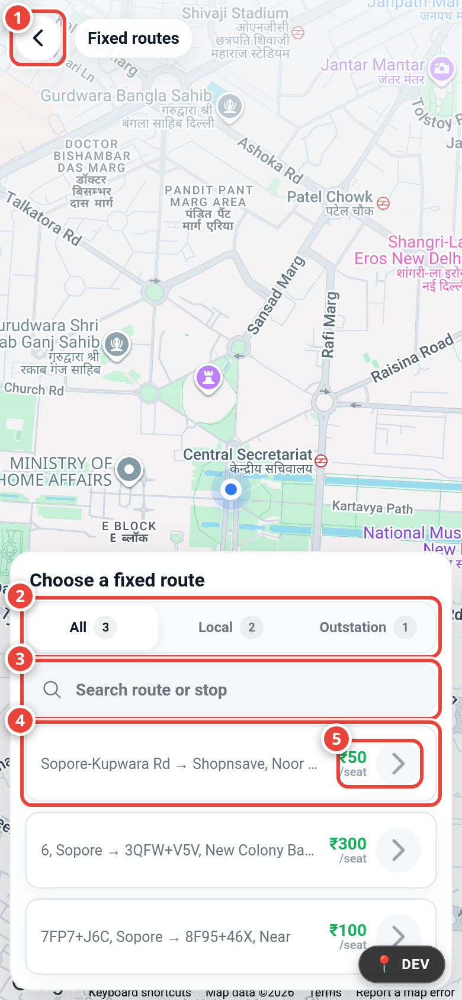
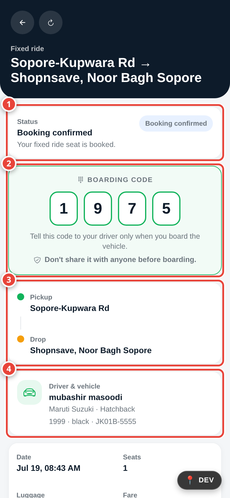
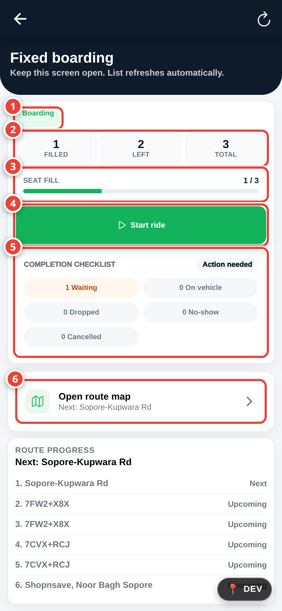
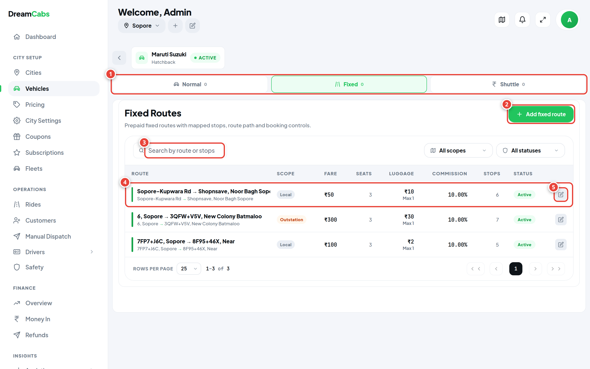
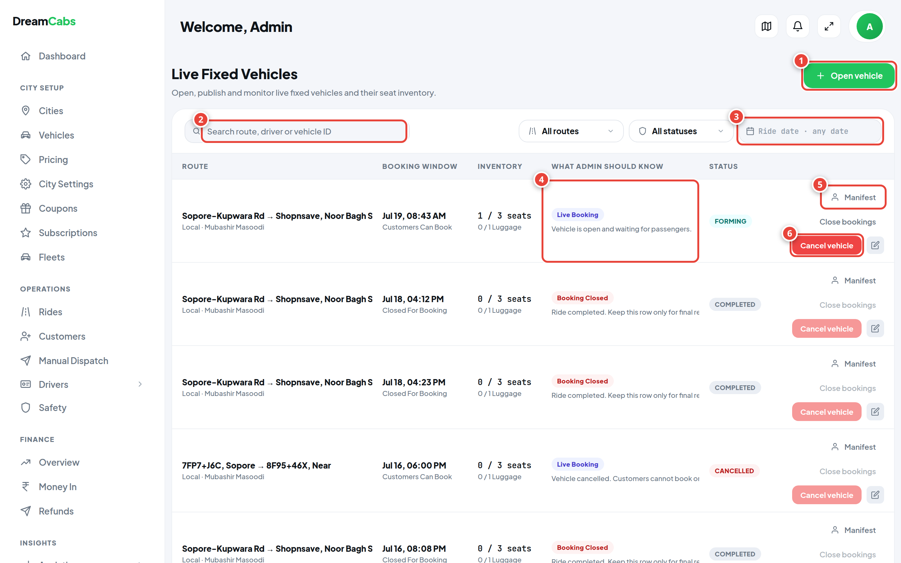
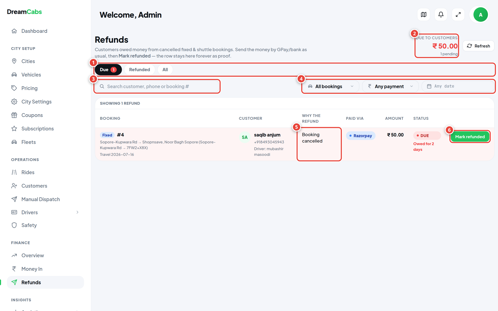

Everything you and your team need to run scheduled, seat-by-seat cab services — bookings, boarding, payments, refunds and daily operations — explained in plain language.
ModuleFixed Rides
AudienceBusiness owner & operations team
Applies toCustomer App · Driver App · Admin Panel
Version1.0 — July 2026
☰ Table of Contents
The guide is organised so you can read it front-to-back for a presentation, or jump straight to one role's chapter when training staff.
How to read the examples. Throughout this guide we use one imaginary route — Srinagar → Baramulla, fare ₹500 per seat — so every rule is shown with real rupee numbers.
1 What is a Fixed Ride?
A Fixed Ride is a cab that runs on a fixed route with fixed stops and a fixed fare — like a premium shared taxi. Passengers don't hire the whole car; they book individual seats.
Think of it like a small, well-run bus service using cabs:
You (the operator) define a route — for example Srinagar → Baramulla — with its official pickup and drop stops along the way.
Each day, a vehicle is opened on that route with a departure time and a fixed number of seats (say 6).
Customers book one or more seats in advance from their phone, pay, and receive a 4-digit boarding code.
The driver picks passengers up at their chosen stops, confirms each one with their boarding code, drops them at their chosen stops, and completes the ride.
Customers get
Certainty
A guaranteed seat, a fixed price known before booking, and live status of their vehicle.
Drivers get
A full car
A pre-filled passenger list, stop-by-stop, with no haggling — the app tells them who boards where.
You get
Control
Routes, fares, seats, commission and refunds are all set and monitored from one admin panel.
ℹ️
Fixed Rides are the launch product. DreamCabs also contains Private (whole-car) and Shuttle modules, but the public launch is Fixed-only. This guide covers Fixed Rides and everything connected to them — payments, refunds, earnings, notifications and reports.
2 Who uses the system
Three apps, three audiences. Each person only sees what they need.
Role
App they use
What they do with Fixed Rides
Customer
DreamCabs Customer App
Browses routes, books seats, pays, tracks the vehicle, shows the boarding code, cancels if needed, sees refunds.
Driver
DreamCabs Driver App
Opens a vehicle on a route, sees the passenger list stop-by-stop, boards passengers by code, marks drops and no-shows, completes the ride, tracks earnings.
Administrator
Admin Panel (web)
Designs routes on a map, sets fares/seats/commission, opens and monitors live vehicles, manages bookings, sends refunds, reads reports.
Support / staff
Admin Panel (limited)
Staff accounts can be given only the permissions they need (for example rides but not finance). Support notes can be attached to any booking so the whole team sees the history of an issue.
ℹ️
About staff permissions. The admin panel has role-based access: you create roles (e.g. "Dispatcher", "Accountant"), tick the modules each role may open, and assign staff. The owner account (super admin) always sees everything.
3 The customer's journey — booking a seat Customer
Booking is a five-screen flow inside the customer app. A first-time customer can finish it in under two minutes.
1
Choose a route
The customer opens Fixed rides from the home screen or menu. They see the list of routes available in their city — each card shows the route name (e.g. Srinagar → Baramulla), the fare per seat, and where it starts and ends. Routes you have paused in the admin panel simply don't appear here.
2
Choose a boarding vehicle
The app lists the vehicles currently open for booking on that route — the departure date and time, the driver's vehicle, and how many seats are still free. A vehicle that is full, already departed, or closed for boarding is not offered.
3
Stops & seats
The customer picks their pickup stop and drop stop from the route's official stops, then uses simple + / − steppers to choose the number of seats and any extra luggage. The price updates live: seats × fare, plus the luggage charge you set on the route.
4
Review & pay
A summary shows the route, vehicle, stops, seats, luggage and total. The customer can apply a coupon here — the discount is shown before paying. They then pay by Wallet (instant, from their DreamCabs balance) or Online (UPI / card via the secure Razorpay page).
5
Booking confirmed
A success screen confirms the seats. The booking appears under My bookings, a confirmation lands in their notifications, and their 4-digit boarding code is now visible on the live ride screen.
⏳
The 5-minute seat hold. The moment a customer reaches payment, their seats are reserved for 5 minutes so nobody else can take them while they pay. If payment isn't completed in time, the hold expires and the seats are automatically released back for sale. No money is taken for an expired hold.
ℹ️
Worked example. Srinagar → Baramulla, fare ₹500/seat, luggage charge ₹100/bag. A family books 3 seats + 1 extra bag = ₹1,600. With a ₹200 coupon, they pay ₹1,400.

1Back button — leaves the booking flow and returns to the previous screen. Nothing is booked yet.
2Route-type tabs — filter the list: All, Local (in-city) or Outstation (intercity). The little number shows how many routes are in each group.
3Search box — type any route or stop name to jump straight to it.
4Route card — one bookable route (start → end). Tapping it moves to the next step: choosing the departure vehicle.
5Fare per seat — the fixed price of one seat, always visible before anything is booked.
Customer app — step 1 of the booking flow (the route chooser over the live map).
4 The customer's other screens Customer
My bookings
A list of every fixed booking the customer has made — upcoming and past. Each card shows the route, travel date, seats, amount paid and the current status (Booked, Boarded, Completed, Cancelled, No-show…). Tapping a booking opens its live ride screen.
The live ride screen
This is the customer's companion for the day of travel. It shows:
Status banner — plain-language updates: "Vehicle is boarding", "Ride started", "You have boarded", "Booking cancelled", and so on.
The boarding code — a large 4-digit code with the instruction: "Tell this code to your driver only when you board the vehicle." A warning reminds them not to share it earlier.
Trip details — pickup and drop stop, seats, amount, payment status, departure status and refund status.
Route map — the route path and stops, so they know exactly where to stand.
🔐
The boarding code is the ticket. The driver cannot mark a passenger as boarded without it. It is shown only in the passenger's own app — staff can never read it from the admin panel, which prevents fraud.
Cancelling a booking
A customer can cancel from the booking screen. What happens next depends on when they cancel — the full rules are in section 11, but in short: cancel more than 30 minutes before departure and the money comes back; later than that, the seat is forfeited.
My Refunds
A dedicated screen listing every rupee coming back to the customer. Each refund card shows the amount, the trip, why the refund exists, its status (On its way / Refunded / No refund), and — most importantly — how and when the money arrives:
Wallet refunds: "Credited instantly to your DreamCabs wallet."
Refunds sent by the team: "Sent by GPay/UPI or bank transfer — usually within 24 hours," then, once sent, the payment reference and the team's note (e.g. "Refunded to your GPay 98••••10").
A filter button lets them view by status and date, exactly like their trip history.
Notifications
The bell icon collects every fixed-ride message: booking confirmed, ride reminders, "your vehicle is boarding", no-show notices, refund sent, and ride completed. The same messages are also sent as push notifications to the phone.

1Status card — the booking's state in plain words ("Booking confirmed — your fixed ride seat is booked"). It updates live as the vehicle boards, starts and completes.
2Boarding code — the passenger's private 4-digit ticket, with the built-in warning not to share it before boarding. The driver needs this exact code to mark them on board.
3Journey card — the chosen pickup stop (green) and drop stop (orange), so the passenger knows exactly where to stand.
4Driver & vehicle card — the driver's name, car model, colour and number plate, so the right vehicle is easy to spot at the stop.
Customer app — the live ride screen. Below the callouts sit date, seats, luggage, fare, coupon and payment details. This one screen answers 90% of "where is my cab?" calls.
5 The driver's journey — running a ride Driver
The driver's side lives in one screen called Fixed boarding — a control panel for the whole ride, from opening the vehicle to completing it.
1
Open a vehicle
The driver picks one of the routes assigned to them and one of their vehicles, and taps Open vehicle. From that moment the vehicle appears in the customer app and seats can be sold. (The admin panel can also open vehicles centrally — drivers then just see theirs ready.)
2
Watch the passenger list fill
The screen shows a live manifest, grouped stop-by-stop: at each pickup stop, the passengers boarding there, their seats, luggage and payment state. New bookings appear in real time. A map view shows the route and stops.
3
Close bookings & start
When it's time to go, the driver can Close bookings (stop new sales) and tap Start ride. Customers see the status change to "Ride started". Booking can be re-opened if plans change before departure.
4
Board each passenger by code
At every stop, the driver taps Board next to a passenger and types the 4-digit code the passenger reads out. Correct code → the passenger is marked Boarded and the customer's app updates instantly. On-the-spot walk-up passengers can also be added and paid in cash if a seat is free.
5
Handle absentees — the waiting timer
If a passenger isn't at the stop, the driver waits. When the driver arrives at a stop, a waiting countdown begins for that stop's passengers (your configured waiting time — never less than 2 minutes). Only after it expires can the passenger be marked No-show — the button is locked until then, and the passenger is notified automatically.
6
Drop passengers & complete
At each drop stop the driver taps Drop for the alighting passengers. Once every passenger is Dropped, No-show or Cancelled, the driver taps Complete ride. The system refuses to complete while anyone is still unaccounted for — no passenger can be "forgotten".
💡
Boarding code safety net. A code entry allows 3 attempts, then locks briefly (5 minutes) to stop guessing. Codes can be re-issued with a 30-second cooldown. If a passenger's phone dies, support can verify identity another way and the admin can manage the booking centrally.
Auto-pilot protections (nobody has to remember)
Auto-start: a vehicle still "boarding" past its departure time is automatically started after a short grace (~15 minutes), so rides don't sit open forever.
Auto-cancel + refund: a departure that never gets a driver is automatically cancelled about an hour past due, and every paid passenger is put into the refund flow. Customers are notified.
GPS-driven waiting timer: the app detects the driver's arrival at a stop and starts the no-show countdown by itself, warning passengers a minute before time expires.
Trip refunds (driver view)
The driver app includes a read-only Trip refunds page listing refunds on their trips — who was refunded, why and when. Its purpose is peace of mind: refunds are paid by DreamCabs from company money, never deducted from the driver, and this page proves it.

1Vehicle status pill — "Boarding" while seats are on sale; it flips to "Started" once the ride begins.
2Seat counters — filled / left / total at a glance (here 1 filled, 2 left of 3).
3Seat fill meter — the same numbers as a progress bar, easy to read while driving up to a stop.
4Start ride — begins the trip; every passenger's app switches to "Ride started". A Close vehicle button appears beside it to stop new bookings.
5Completion checklist — live tally of Waiting / On vehicle / Dropped / No-show / Cancelled. "Action needed" means someone is still unresolved — the ride cannot be completed until this is clear.
6Open route map — full-screen map with the route path and the next stop named.
Driver app — the Fixed boarding console. Below the callouts, the stop-by-stop route progress list. The screen refreshes itself — the driver just keeps it open.
6 Driver earnings, commission & wallet Driver
Fixed Rides use a simple, transparent money model: the driver collects the fares, and DreamCabs takes a small commission from the driver's prepaid wallet.
The driver wallet is a prepaid float
Every driver tops up a small balance (like a mobile recharge). That balance is used for two things only: platform commission and subscription plans. It is not an earnings account — fare money reaches the driver directly (cash) or via the operator's payouts.
How commission works on a fixed ride
You choose the commission style per route (or per city as a default):
When the ride completes, the total commission for the vehicle's bookings is debited from the driver's wallet automatically, with a clear transaction entry the driver can see. Commission can never exceed the fare, and the system never pushes a wallet below its allowed limit — it's designed so a driver is never "in debt" from a ride.
🎫
Subscriptions override commission. If the driver has an active subscription plan, the plan's rate wins — typically 0% (commission-free) for the rides included in the plan. Each completed ride consumes one ride from the plan. This is your loyalty lever: sell plans to busy drivers, and casual drivers pay per-ride commission.
Payouts
Where the operator owes a driver money (for example online-paid fares collected into the company account), payouts are made outside the app — by GPay or bank transfer — as part of your normal settlement routine. The app intentionally does not move payout money automatically; you stay in control of every rupee leaving the account.
What the driver sees
Earnings screen — daily/weekly totals of completed rides.
Wallet screen — balance, top-ups, and every commission debit with the ride it belongs to.
Subscriptions screen — active plan, rides remaining, expiry, and plans available to buy.
Trip history — every past ride with fares and payment state.
7 The admin panel — routes Admin
Routes are the foundation of the Fixed module. You design them once, on a map, and everything else — vehicles, bookings, fares, stops — flows from them.
The Fixed Routes page
Where: Admin panel → City setup → Vehicles → open a vehicle type → Fixed tab. Who: admins with the vehicles permission. Each row shows the route's name, scope, fare, seats, luggage charge, commission, number of stops and status. You can search by route or stop name and filter by scope and status.
Field
What it means
Route
The display name customers see, e.g. "Srinagar → Baramulla".
Scope
Local (inside one city) or Outstation (intercity).
Fare
The price of one seat, end to end. This is the number customers see.
Seats
The default seat capacity of a vehicle on this route.
Luggage
The extra charge per additional luggage piece (optional).
Commission
The platform's cut on this route — percent of booking, or ₹ per seat.
Stops
How many official pickup/drop stops the route has.
Status
Active routes are bookable; paused routes vanish from the customer app instantly (existing bookings are untouched).
The map editor
Creating or editing a route opens a live map with drawing tools:
Place origin and destination pins.
Draw the route path the vehicle follows (with undo).
Add stops along the path — each stop gets a name; these become the pickup/drop choices customers see.
Set fare, seats, luggage charge and commission, then save.
A search box lets you jump the map to any place. What you draw here is exactly what customers and drivers see on their maps.
⚠️
Changing a live route. Fare and commission changes apply to new bookings only — money already collected is never re-priced. Prefer pausing a route over deleting it: paused routes preserve their booking history.

1Service tabs — each vehicle type can serve Normal (private), Fixed and Shuttle modes; the Fixed tab holds everything on this page.
2Add fixed route — opens the map editor: place origin and destination, draw the path, drop the stops, then set fare, seats, luggage charge and commission.
3Search — find a route by its name or any of its stops. The All scopes / All statuses dropdowns beside it narrow the list further.
4Route row — one route's full commercial setup in a line: scope (Local/Outstation), fare per seat, seat capacity, luggage charge, commission and its Active/Paused status.
5Edit — reopens this route in the map editor to adjust stops, path or pricing (new bookings only; past money is never re-priced).
Admin panel — Fixed Routes (City setup → Vehicles → open a vehicle type → Fixed tab). Tip: draw a demo route live in the meeting — it lands very well.
8 The admin panel — live vehicles & bookings Admin
The Live Fixed Vehicles page is your control tower: every vehicle on every route, today and in the past, with every passenger inside it.
The vehicles table
Where: Admin panel → Operations → Rides → Active Vehicles tab. Each row is one departure (one vehicle, one route, one date/time): the route, driver, vehicle, departure time, seats sold vs capacity, and status. The toolbar gives you:
Search — by route, driver or vehicle ID.
Route filter — a single route's departures.
Status filter — Boarding / Started / Departed / Completed / Cancelled.
Date range picker — today, last 7 days, this month, or any custom range.
Open vehicle — create a departure centrally: pick the route, driver, vehicle and time. It appears in the customer app immediately.
Inside a vehicle — the passenger drawer
Clicking a vehicle opens its passenger list, filterable by booking status (Booked / Confirmed / Boarded / Dropped / No-show / Cancelled), payment status (Paid / Pending / Failed / Refunded) and refund status. For each passenger you see stops, seats, luggage, amounts and the full event history of the booking — every step, who did it and when. Staff can attach support notes that stay with the booking.
What an admin can do to a booking
Cancel one passenger — e.g. on a customer's phone request. The refund rules run automatically and the customer is notified.
Cancel a whole vehicle — e.g. breakdown. Every paid passenger goes into the refund flow at once, each with a notification.
Close / reopen bookings, monitor boarding progress live, and see exactly which stop the ride has reached.
🔐
What an admin can never do: see a passenger's boarding code. Codes exist only in the passenger's app, so a staff member can't board someone else's seat.
Reports & finance
The admin panel's finance overview gives a date-filtered picture of money across the platform — bookings taken, refunds due and sent, commission earned. Together with the vehicles table's date filters, you can answer "how did this route perform last month?" in a few clicks.

1Open vehicle — create a departure centrally: pick the route, driver, vehicle and time. It appears in the customer app immediately.
2Search — find a departure by route, driver or vehicle ID. The All routes / All statuses dropdowns beside it filter the table.
3Ride date picker — today, last 7 days, this month or any custom range; your window into history.
4"What admin should know" — a plain-language line per row: here "Vehicle is open and waiting for passengers" with a Live Booking chip; other rows explain completed and cancelled states.
5Manifest — opens the vehicle's full passenger list: statuses, payments, refunds and each booking's event history.
6Cancel vehicle — calls off the whole departure; every paid passenger automatically enters the refund flow and is notified. Close bookings above it just stops new sales.
One page answers three questions forever: who is owed money, why, and has it been sent?
How refunds physically work
DreamCabs deliberately keeps you in control of outgoing money:
Wallet-paid bookings refund automatically and instantly to the customer's DreamCabs wallet. They appear in the register as already settled.
Online-paid (Razorpay) bookings are refunded manually by your team — you send the money by GPay/UPI, bank transfer, or from the Razorpay dashboard, then record it in the register. The app never auto-transfers money out of your account.
The Refunds page
Where: Admin panel → Finance → Refunds. The header shows the headline number — "Due to customers: ₹X" — and tabs for Due / Refunded / All. The toolbar has search (customer, phone, booking #), booking-type and payment filters, and a date-range picker. Each row shows the booking, the customer, why the refund exists in plain words ("Operator cancelled the departure", "Customer cancelled before the cutoff"…), the amount, and its status. A refund left due more than 24 hours turns red so it can't be ignored.
Marking a refund as sent
Clicking Mark refunded opens a side panel:
The amount is locked to what is owed — it cannot be typed, so a typo can never over- or under-pay.
Your team fills three required fields: how it was sent (GPay/UPI, bank, Razorpay dashboard, cash, other), the payment reference, and a note. The save button stays disabled until all three are filled.
On save, the row flips to Refunded, the customer gets an instant notification — "Your refund of ₹500 has been sent via GPay/UPI. Reference: …" — and the reference + note appear on the customer's My Refunds screen.
Settled rows never disappear. The register is a permanent audit trail: amount, method, reference, note, who marked it and when.
🛡️
Privacy by design. The app never collects or stores customers' bank or UPI details. Your team sends money through channels you already trust, and the app keeps the proof.

1Due / Refunded / All tabs — the working queue, the permanent proof archive, and both together. The red count on Due shows how many customers are still owed.
2Due to customers — the headline number: total rupees still owed and how many refunds are pending. The morning goal is ₹0.
3Search — find a refund by customer name, phone or booking number.
4Filters — booking type (Fixed/Shuttle), how it was paid (Razorpay/Wallet) and a date range.
5Why the refund — the reason in plain words ("Booking cancelled", "Operator cancelled the departure"), so nobody has to dig through history.
6Mark refunded — opens the side panel after you've sent the money: amount locked, then method + reference + note (all required) before it can be saved. The row's red "Owed for 2 days" aging disappears once settled.
Admin panel — the Refund Register (Finance → Refunds). Tip: the locked amount in the side panel is the anti-mistake feature owners ask about.
10 The complete ride lifecycle
One booking, start to finish — who acts, and what the system does in between.
Admin / Driver
Vehicle opened on a route
A departure is created (centrally or by the driver). It becomes visible in the customer app with its free seats.
Customer
Seats booked & paid
Route → vehicle → stops & seats → coupon → payment. Seats were held for 5 minutes during payment; on success the booking is Booked/Confirmed and the boarding code is issued.
System
Reminders & live status
The customer's app shows vehicle status live; notifications announce boarding and departure. Booking closes automatically or when the driver closes it.
Driver
Ride started
The driver starts the ride; every passenger's app switches to "Ride started".
Driver + Customer
Boarding at each stop
The GPS waiting timer runs at each stop. Passengers read out their 4-digit code; the driver enters it → Boarded. Absent passengers can be marked No-show only after the timer expires.
Driver
Drops along the route
Passengers are marked Dropped at their chosen stops.
Driver
Ride completed
Allowed only when every passenger is resolved. Commission is settled from the driver's wallet (or the subscription absorbs it). Customers get a completion notification.
Admin
After the ride
The departure moves to history with its full passenger record; finance numbers update; any refunds owed appear in the register until sent.
These are the promises the system enforces automatically, so your team doesn't have to.
Seats & capacity
A vehicle can never be overbooked — seat counts are checked at booking time and while seats are held.
Seats held during payment are invisible to other customers for those 5 minutes, then auto-released if unpaid.
Luggage capacity is tracked alongside seats, using the per-route luggage charge.
Pricing
Price = seats × route fare + extra luggage × luggage charge − coupon discount. Nothing else. No surge, no hidden charges.
Coupons are validated and previewed before payment, so the customer always sees the final number first.
Cancellation & refunds — the 30-minute rule
When the customer cancels
What happens
More than 30 minutes before departure
Refund approved. Wallet payments → instant wallet credit. Online payments → the amount enters the refund register and your team sends it (usually same day).
Within 30 minutes of departure
No refund — the seat was held too close to departure to resell. The booking shows "No refund" with the reason.
The operator cancels (any time)
Full refund, always — whether one passenger or the whole vehicle is cancelled.
Passenger is a no-show
No refund. The waiting timer proves the vehicle waited the promised time.
Example: a passenger cancels a ₹500 wallet-paid seat 2 hours before departure → ₹500 is in their wallet the same second. If they'd paid online, the ₹500 appears as "Due" in your register and reaches them by GPay the same day.
The no-show waiting promise
Every stop has a waiting time (you configure it per city; the system enforces a minimum of 2 minutes even if misconfigured).
The countdown starts when the driver actually arrives at the stop (GPS-detected) — not before.
The no-show button stays locked until the timer expires, on the server, so it cannot be bypassed with an old app.
The passenger is warned as time runs low, and notified if marked no-show.
Boarding verification
4-digit code, visible only in the passenger's app. 3 wrong attempts → 5-minute lock. Codes re-issue with a 30-second cooldown and expire after 10 minutes for safety.
Payments
Wallet — instant, no processing delay, instant refunds.
Online (Razorpay) — UPI and cards through the secure payment page. If money is captured but the booking could not be created (a rare payment race), the system detects it and reverses that payment automatically.
Cash — for walk-up passengers boarded on the spot by the driver, and dispatcher-made bookings.
Commission & subscriptions
Percent of booking or ₹ per seat, set per route (with a city default). Charged from the driver wallet at completion.
An active driver subscription overrides the rate (usually to 0%) and is consumed ride by ride.
Commission never exceeds the fare and never drives a wallet into forbidden debt.
12 Every status explained
Four small dictionaries — bookings, vehicles, payments and refunds. Staff can keep this section printed at the desk.
Booking status (one passenger's seat)
Status
Meaning
Set by
What happens next
Booked
Seats reserved and paid.
System, on payment
Waits for travel day.
Confirmed
Booking locked in for the departure.
System
Passenger boards on travel day.
Boarded
Passenger is in the vehicle (code verified).
Driver
Dropped at their stop.
Dropped
Passenger delivered to their drop stop.
Driver
Counts toward ride completion.
Completed
The journey finished normally.
System, at ride completion
Moves to history.
No-show
Passenger absent after the waiting timer.
Driver / automatic
No refund; passenger notified.
Cancelled
Cancelled by customer, operator or system.
Any
Refund rules run automatically.
Vehicle status (one departure)
Status
Meaning
Boarding
Open for booking; seats on sale; passengers gathering.
Started
The driver has started the ride; boarding along the route.
Departed
On its way along the route.
Completed
Ride finished; all passengers resolved; commission settled.
Cancelled
Called off; every paid passenger enters the refund flow.
Payment status
Status
Meaning
Pending
Payment started but not finished (e.g. UPI screen open).
Paid
Money received; seats confirmed.
Failed
Payment didn't go through; no seats taken; bank auto-reverses any deduction.
Refunded
Money returned to the customer (see refund status for how).
Refund status
Status
Meaning
Customer sees
None
No refund involved.
—
Approved
Refund owed; waiting for your team to send it. Shown as "Due" in the register.
"On its way — usually within 24 hours."
Refunded
Money sent and recorded (method + reference + note).
"Refunded", with reference and your note.
Rejected
Not eligible (late cancellation or no-show).
"No refund", with the reason.
13 How the money moves
Three flows cover every rupee in the Fixed module.
Cancellation>30 min before departure→Refund approvedamount locked→Wallet: instant creditorOnline: appears in register"Due to customers"→Team sends by GPay/bankrecords ref + note→Customer notified
3 · Driver earnings flow (ride completes)
Ride completedall passengers resolved→Commission calculated% of bookings or ₹/seat→Debited from driver walletor covered by subscription→Fares stay with driver / settled in payouts
Worked end-to-end: a 6-seat vehicle sells out at ₹500/seat = ₹3,000 in bookings. With 10% commission the driver's wallet is debited ₹300 at completion — unless their subscription covers it, in which case the debit is ₹0 and one plan-ride is consumed.
14 Running Fixed Ride operations — the daily checklist
Fifteen minutes, twice a day, keeps the whole operation healthy.
Every morning
Check
Where
What good looks like
Today's vehicles
Live Fixed Vehicles → date = today
Every planned departure exists and has a driver and vehicle.
Seat sales
Same page — seats column
Vehicles filling as expected; open extra vehicles if a route is selling out.
Refunds due
Finance → Refunds → Due tab
The "Due to customers" total is ₹0 — or every due row gets sent this morning. Red rows are overdue.
Notifications
Admin bell
No unread system alerts about failed payments or cancelled vehicles.
During the day
Check
Why
Vehicles stuck in "Boarding" past departure
The system auto-starts them after a grace period, but a stuck vehicle usually means a driver needs a phone call.
No-shows & cancellations
A route with repeated no-shows may need a stop-location or timing fix.
Support notes
Complaints attached to bookings — reply while the trip context is fresh.
Every evening / weekly
Check
Where
Completed rides & revenue for the day
Live Fixed Vehicles (Completed filter) + Finance overview
Driver payouts owed (online-paid fares)
Your settlement routine + finance overview
Driver wallets running low
Drivers section — nudge drivers to top up so commission never fails
Route performance (weekly)
Vehicles table with a 7-day range, per route — decide where to add or cut departures
15 Frequently asked questions
How does a customer reserve a seat?
They pick a route, pick a departure vehicle, choose pickup/drop stops and seat count, and pay by wallet or UPI/card. Their seats are protected for 5 minutes while they pay, so nobody can take them mid-payment.
Can two customers buy the same seat?
No. Seat counts are enforced centrally, and held seats are invisible to everyone else until the hold expires.
What happens if a customer cancels?
More than 30 minutes before departure: full refund (instant to wallet, or sent by your team for online payments). Within 30 minutes: no refund, and the app tells them why.
How are refunds actually paid?
Wallet refunds are automatic and instant. Online-payment refunds appear in the admin Refund Register as "Due"; your team sends the money by GPay/bank/Razorpay dashboard and records the reference and a note. The customer is notified instantly and sees the proof in their app.
How does boarding verification work?
Every booking has a private 4-digit code shown only in the passenger's app. The driver taps Board and types the code the passenger reads out. Three wrong attempts locks entry for 5 minutes.
What if the passenger isn't at the stop?
A waiting countdown starts when the driver arrives at the stop (minimum 2 minutes, configurable). Only after it expires can the passenger be marked no-show — the button is locked until then, and the passenger is warned and then notified.
What if a driver never shows up for a departure?
A departure that is still driverless about an hour past its time is automatically cancelled and every paid passenger is put into the refund flow with a notification. You'll see it in the register.
How is the driver paid?
Fares belong to the driver (cash directly; online fares settled in your payout routine). DreamCabs' commission — a percent of bookings or ₹ per seat — is taken automatically from the driver's prepaid wallet when the ride completes. A subscription plan can make rides commission-free.
Does a refund cost the driver anything?
No. Refunds are paid from company money. The driver app even has a "Trip refunds" page showing this, so drivers are never surprised or worried.
Can my staff see or use a passenger's boarding code?
No. Codes are never shown in the admin panel — only the passenger has it. This is deliberate fraud protection.
Can I take bookings for walk-up passengers?
Yes — the driver can add an on-the-spot passenger to a free seat (cash), and your dispatcher can create bookings centrally for phone-in customers.
How do I stop selling a route?
Pause it in Fixed Routes — it disappears from the customer app instantly. Existing bookings are untouched, and you can un-pause any time.
How does the admin monitor everything at once?
The Live Fixed Vehicles page: filter by date, route or status, and open any vehicle to see every passenger, payment and event. The Refund Register and Finance overview cover the money side.
16 Future enhancements
Built or planned, but not part of the current Fixed Ride launch. Listed here so they're never mistaken for live features.
Item
State
Plain-language description
Private rides module
Built, launching later
Whole-car on-demand bookings with fare negotiation. Fully built, held back for a later launch phase.
Shuttle module
Built, launching later
Corridor-based shared shuttles with journeys and passenger pickups. Same refund register already supports it.
Boarding code by SMS
Pending approval
Today the code lives in the app (which always works). Sending it additionally by SMS awaits telecom (DLT) template approval — switched on the day approval lands.
Late-cancellation fee
Awaiting policy
Charging a small fee (rather than zero refund) for late cancellations is supported by the design but waits on your business decision.
Toll auto-detection
Deferred
Automatic toll pricing is wired in, but current map data returns ₹0 for Kashmir routes, so tolls stay off until a manual fallback is added.
Unified transactions view
Optional idea
One combined ledger of every payment, refund and commission across modules. Today the same facts live in the finance overview + registers.